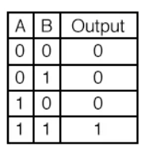
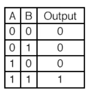
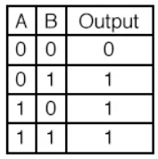
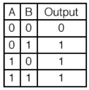
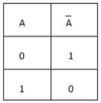
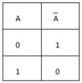

DDS Mini-Project
* * *
Group Members
Theory Involved
Logic Gates
It is an electronic circuit having one or more than one input and only one output. The relationship between the input and the output is based on a certain logic.
There are different kinds of logic gates. The project involved the following logic gates
- AND Gate
-
The AND gate gives us a HIGH output if and only if all the inputs to the AND gate are HIGH. If even one of the inputs to the AND gate is LOW then the output will be LOW. The function can be extended to any number of inputs. The truth table and boolean expression are as follows:
 

Q = A^B or Q = A&B.
OR Gate: The OR gate gives us a HIGH (1) output if atleast one of the inputs to the OR gate is HIGH (1). If both of the inputs to the OR gate is LOW (0) then the output will be LOW (0). The function can be extended to any number of inputs. The truth table and boolean expression are as follows: NOT Gate: The NOT gate gives us a HIGH (1) output if the input to the NOT gate is LOW(1). It gives us the opposite truth value, hence is also known as an inverter. The truth table and boolean expression are as follows: Stuck at fault: When a signal, or gate output, is stuck at a 0 or 1 value, independent of the inputs to the circuit, the signal is said to be “stuck at” and the fault model used to describe this type error is called a “stuck at fault model”. Stuck at faults occur when a line is permanently stuck to Vdd or ground giving a faulty output. This line may be an input or output to any gate. Also this fault can be single or multiple stuck at faults. A fault model is an engineering model of something that could go wrong in the construction or operation of a piece of equipment. From the model, the designer or user can then predict the consequences of this particular fault. Basic fault models in digital circuits include the stuck-at fault model, the bridging fault model, the transistor faults, the open fault model, the delay fault model, etc. If a circuit has n signal lines, there are potentially 2n stuck-at faults defined on the circuit. OR Gate: The OR gate gives us a HIGH output if atleast one of the inputs to the OR gate is HIGH. If and only if both of the inputs to the OR gate are LOW then the output will be LOW. The function can be extended to any number of inputs. The truth table and boolean expression are as follows:
 

NOT Gate: The NOT gate gives us a HIGH output if the input to the NOT gate is LOW. It gives us the opposite truth value, hence is also known as an inverter. The truth table and boolean expression are as follows:
 

Stuck at faults:
When a signal or gate output, is stuck at a 0 or 1 value, independent of the inputs to the circuit, the signal is said to be “stuck at” and the fault model used to describe this type error is called a “stuck at fault model”. Stuck at faults occur when a line is permanently stuck to Vdd or ground giving a faulty output. This line may be an input or output to any gate. Also this fault can be single or multiple stuck at faults. A fault model is an engineering model of something that could go wrong in the construction or operation of a piece of equipment. From the model, the designer or user can then predict the consequences of this particular fault. Basic fault models in digital circuits include the stuck-at fault model, the bridging fault model, the transistor faults, the open fault model, the delay fault model, etc. If a circuit has n signal lines, there are potentially 2n stuck-at faults defined on the circuit.